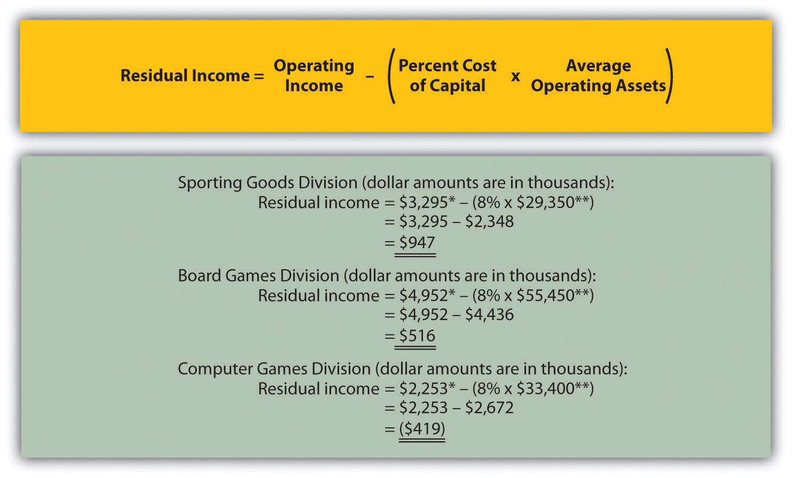

Question: Although ROI is commonly used as a divisional performance measure, some division managers dislike this measure. Why do some division managers prefer not to use ROI as a performance measure?
Answer: Some managers dislike ROI because it can lead to decisions that benefit the division but hurt the organization as a whole. Division managers have an incentive to turn down investments that exceed the company’s minimum required rate of return but are below the division’s current ROI, mainly because ROI trends are often used to evaluate managers. For example, assume the manager of a division is evaluated based on ROI, and the division currently has an ROI of 20 percent:
The company’s minimum required rate of return is 10 percent, and the division manager is presented with an investment opportunity expected to yield an ROI of 15 percent. This investment totals $70,000 and annual operating profit will be $10,500 (15 percent ROI = $10,500 ÷ $70,000). Although this investment is well above the company’s minimum required rate of return, the division manager will likely not make the investment since the division’s overall ROI will decline from 20 percent to 17.9 percent:
If evaluated solely based on ROI, the division manager would prefer to invest only in projects that increase the division’s ROI above 20 percent. In fact, the division manager has an incentive to shed all investments yielding less than 20 percent, even if the investments are producing a return above the company’s minimum requirement of 10 percent. An alternative measure to ROI, called residual income (RI), helps to mitigate this apparent conflict.
Question: What is RI, and how does it help to prevent the conflict associated with ROI?
Answer: RIThe dollar amount of division operating profit in excess of the division’s cost of acquiring capital to purchase operating assets; it is calculated as Residual income = Operating income − (Percent cost of capital × Average operating assets). is the dollar amount of division operating profit in excess of the division’s cost of acquiring capital to purchase operating assets. The calculation is as follows:
Rather than using a ratio to evaluate performance, RI uses a dollar amount. As long as an investment yields operating profit higher than the division’s cost of acquiring capital, managers evaluated with RI have an incentive to accept the investment. The manager’s goal is to increase RI from one period to the next.
Notice that operating income and average operating assets used here to calculate RI are the same measures used in the ROI calculation presented earlier. The one new item, percent cost of capitalThe company’s percentage cost to obtain investment funds., is the company’s percentage cost to obtain investment funds (often called capital). For example, a company that raises funds by issuing bonds would use the interest rate associated with the bonds in establishing its percent cost of capital. We will always provide the percent cost of capital in this chapter, leaving detailed discussions of its calculation to more advanced courses. Note that several sources provide cost of capital information by industry. One source is the Leonard N. Stern School of Business at New York University (http://pages.stern.nyu.edu/~adamodar/New_Home_Page/datafile/wacc.htm).
Let’s take another look at the division that rejected an investment yielding an ROI higher than the company’s minimum required rate of return of 10 percent but lower than the division’s current ROI of 20 percent. Assume the company’s percent cost of capital is the same as its minimum required rate of return of 10 percent. Three RI calculations are provided as follows, (1) RI before the new investment, (2) RI from the new investment, and (3) RI after the new investment. (Note that some organizations make adjustments to the cost of capital to determine the minimum required rate of return. Throughout this chapter, assume percent cost of capital is the same as minimum required rate of return unless stated otherwise.)
Since the manager’s goal is to continually increase RI, the proposed investment would be accepted resulting in an increase of $3,500 in RI (= $13,500 − $10,000). As shown in this example, using RI as a performance measure is an effective way to minimize the conflict between company goals and division goals that arise using ROI. Rather than maximizing ROI, division managers focus on increasing RI. Managers are more likely to accept investment proposals that have a return greater than the company’s minimum required rate of return, regardless of the impact on the division’s ROI.
Question: Although RI resolves some of the problems of using ROI as a performance measure, it does not provide an efficient means for comparing divisions. What is the problem with using RI to compare divisions?
Answer: Similar to the problem encountered with using segmented net income to compare divisions, RI is stated in dollars (or some other currency) rather than as a ratio. One division may have high RI simply because it has a larger asset base, which produces higher revenues. Thus division managers should be evaluated based on how effectively they increase RI from one period to the next, perhaps in percentage growth, and not on how their RI compares to other divisions.
Most organizations that use RI also use ROI. Using both measures has the benefit of comparing one division to another by using ROI and minimizes the conflict between company goals and division goals by using RI.
Question: Let’s revisit Game Products, Inc., and calculate RI for each of the three divisions. How did the three divisions perform using RI as the measure?
Answer: Figure 11.8 "RI Calculations (Game Products, Inc.)" shows the RI calculation for each division at Game Products, Inc., assuming a cost of capital of 8 percent. Notice that Sporting Goods and Board Games have positive RI, which indicates both divisions are producing operating income above and beyond the minimum required rate of return. Since the Computer Games division has negative RI, this division is not producing enough operating income to achieve the minimum required rate of return.
Having positive RI is reasonable for Sporting Goods and Board Games since both divisions have an ROI above the 8 percent minimum required rate of return (as shown back in Figure 11.7 "Operating Profit Margin, Asset Turnover, and ROI for Game Products, Inc."). It is also reasonable that Computer Games has negative RI since the division’s ROI is less than 8 percent.
Figure 11.8 RI Calculations (Game Products, Inc.)
*From Figure 11.3 "Segmented Income Statements (Game Products, Inc.)".
**From Figure 11.5 "ROI Calculations (Game Products, Inc.)".
RI is the dollar amount of division operating profit in excess of the division’s cost of acquiring capital to purchase its operating assets. The calculation is as follows:
Operating income and average operating assets used to calculate ROI are also used here to calculate RI. The percent cost of capital is new and represents the company’s percentage cost to obtain investment funds. The goal is for each division manager to increase RI over time.
This is a continuation of the Kitchen Appliances example presented in Note 11.18 "Review Problem 11.3", Note 11.26 "Review Problem 11.4", and Note 11.33 "Review Problem 11.5". Financial information for Kitchen Appliances is provided again as follows. Assume the cost of capital rate is 6 percent.

Solution to Review Problem 11.6
All dollar amounts are in thousands.
*From Note 11.26 "Review Problem 11.4" data.
**From Note 11.26 "Review Problem 11.4" solutions, part 1.